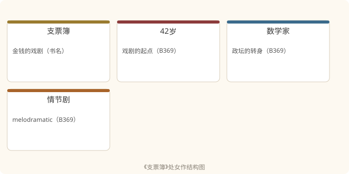

支票簿
一、基本信息
| 作者 | 何塞·埃切加赖 |
|---|---|
| 成书/出版 | 1874年（Britannica B369：El libro talonario（'The Checkbook'）——'His first play...not produced until 1874, when he was 42'） Jose Echegaray y Eizaguirre — Encyclopaedia Britannica（百科全书） |
| 国别/地区 | 西班牙 |
| 时代 | 近代 · 19世纪70年代 |
| 体裁 | 戏剧 |
| 语言 | 西班牙语 |

《支票簿》处女作结构图（主题·结构图）
二、创作背景
Britannica（B369）：El libro talonario——'His first play, El libro talonario (The Checkbook), was not produced until 1874, when he was 42'。
Britannica（B369）：此后平均'一年两部'。
题材（通说待核）：支票簿的金钱与爱情悲剧（处女作情节通说待核）。
三、内容脉络
（通说待核）处女作的情节细节核对。
（通说待核）42岁'重启'人生（数学家→剧作家）。
四、主要人物表
| 人物 | 身份 | 说明 |
|---|---|---|
| （待核） | —— | （通说待核，B369未载） |
五、主题与艺术特点
- 处女作：政坛转向戏剧（B369）。
- 情节剧的起点（B369：melodramatic 交叉）。
- '42岁'的传奇（B369）。
六、影响与评论
- Britannica：'His first play'（B369）。
Jose Echegaray y Eizaguirre — Encyclopaedia Britannica（百科全书） - Britannica：1904诺奖（B369 交叉）。
Jose Echegaray y Eizaguirre — Encyclopaedia Britannica（百科全书）
七、阅读建议
难点
- 处女作的戏剧史定位。
- '支票簿'标题的直译。
- 《支票簿》中译名（《记账簿》）待核。
- 西班牙文原版（公有领域）。
埃切加赖起点；对照《疯子还是圣徒》。
八、待核实
- 剧情细节核对（通说）。
- 1874年首演剧场待核。
- 中译名两说待核。